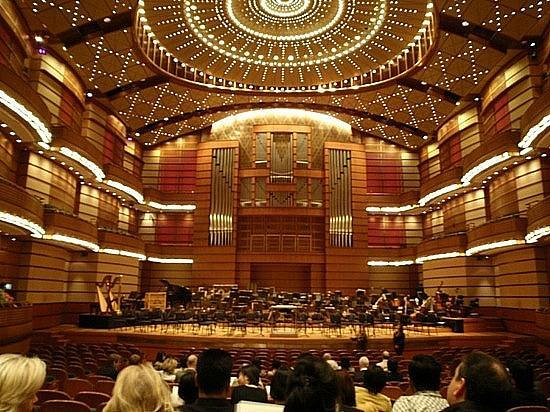

| Batu Caves | Malaysia Elephant Sanctuary Tour | Thean Hou Temple |
|---|---|---|
|
||
| On your third day in Kuala Lumpur, visit Batu Caves so that you can admire the colourful Indian temples and architecture. You can go there at 8am. Plan to stay: 1-2 hours. | You can find out list tour activity including bathing and feeding and how to do it. You can go there at 1pm. Plan to stay: 3hours. | Visitors can have their fortune told at the prayer hall. There are 3 'fortune telling' machines. You can go there at 6pm. Plan to stay: 1hour. |
| Pavilion Kuala Lumpur | Dewan Filharmonik Petronas | Made in Penang Interactive 3D Museum |
|---|---|---|
 |
 |  |
| You can get reasonably priced Korean, Japanese and local fare and find the latest collections from international and local high fashion designers. You can go there at 10am. Plan to stay: 3hours. | Reasonably formal dress is required but gentlemen can borrow a jacket at the entrance for free if needed. You can go there at 2am. Plan to stay: 2-3 hours. | You can enjoy a rope course, mini golf, a 4D theater and more attractions at our Fort Walton Beach theme park. You can go there at 7pm. Plan to stay: 2hours. |
| Camoes Garden and Grotto | A'Famosa Fort | Colmar Tropicale |
|---|---|---|
 |
 |
 |
| Camoes Garden at Camoes Square is one of the largest parks. It opens from 6am to 10pm. It is a good place for resting in a Chinese pavilion with stone tables and stools. Plan to stay: 1 hour. | You can see two of the gateways to the fort, including the Santiago Gate, as well as the stadthuys, church and jail. You can go there at 4pm. Plan to stay: 1-2hours. | You can look to experience a classic French ambience amid lush tropical surroundings without splurging on a plane ticket. You can go there at 8pm. Plan to stay: 2hours. |
| Mini Malaysia & ASEAN Cultural Park | Merdeka Square | Little India Briekfields |
|---|---|---|
 |
 |
 |
| You can learn an interest in traditional architecture and ways of life, this is a great place to go exploring. You can go there at 10am. Plan to stay: 1hour. | You can swim in crystal clear waters, hike in verdant jungles, or even enjoy a picnic by stunning waterfalls. You can go there at 3pm. Plan to stay: 3hours. | If you have a few days, you can have a gorgeous Indian sari tailor-made at one of the workshops. You can go there at 7pm. Plan to stay: 1-2hours. |
| Price List | |
|---|---|
| Numbers of people | Usual Price |
| Single | $2500 |
| Dual | $5000 |
| Triple | $7500 |
| Four and above | $2300 for each |